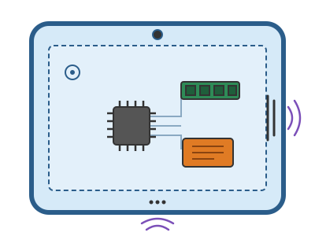

What you need here
Learn with an AI tutor
An AI tutor explains this page to you and helps you with the exercises. Choose your assistant:
Open with Claude Open with ChatGPT Open with Mistral Vibe
You use your own account with the provider. The assistant is not offered by lernapps.net: lernapps only provides the content and the exercises. The choice holds for all pages, on this device only.
In this chapter you will tidy up Mia's tablet. For this you need four things that you have already learnt. Read each part and ask yourself: can I do this already?
Computer components

© CC-BY-4.0- processor: calculates
- memory: holds what is being worked on right now
- storage: keeps things, even without power. This is where Mia's files are.
The glass computer: a tablet made of glass. The orange box (3) is the storage.
Can you do this already? I can name the main components of a computer and describe what they do. One of them matters for this chapter: what Mia saves is kept in storage. It stays there even when the tablet is off.
Using application software
Can you do this already? I can use the basic functions of programs, such as open, save, copy and paste.
- Save puts something into storage.
- Cut remembers something so that you can put it somewhere else.
- Paste puts it back down in a new place.
In this chapter you will cut files and paste them into a folder.
Trees
 © CC-BY-4.0
© CC-BY-4.0- root: the top node
- edge: a line between two nodes
- node: a box in the tree
- leaf: a node with no nodes below it
The room plan of Mia's class trip to Seeberg: the children of class 6b, among them Mia and her friends Selin and Jona.
Can you do this already? I can show information with levels as a tree with a root, nodes, edges and leaves. Mia's tablet will soon be a tree just like this.
Bits and bytes
Can you do this already? I can explain the units bit, byte, kilobyte, megabyte and gigabyte and use them to compare amounts of data. You will need them on the page “Comparing storage locations”.
| Unit | as much as |
|---|---|
| 1 byte | 8 bits |
| 1 kilobyte (KB) | 1000 bytes |
| 1 megabyte (MB) | 1000 kilobytes |
| 1 gigabyte (GB) | 1000 megabytes |
Is any of this missing for you? Then look at the page of that building block first, at the top of this page. Otherwise, let's start: Mia is looking for her speech.
Found a mistake or have an idea for this app?